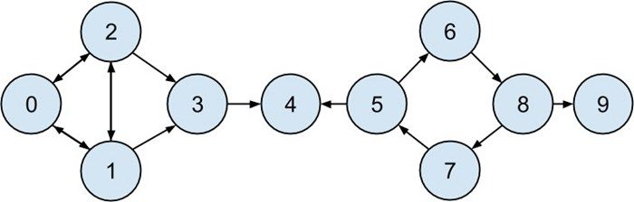
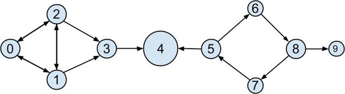

21.3 有向图与PageRank
由于 DataSciencester 没有获得人们的热烈追捧，因此，负责营收的副总决定将网站从交友模式转换为赞助模式。事实证明，除了高科技业的猎头非常关心哪些数据科学家备受其他数据科学家推崇之外，没人对科学家之间的好友关系特别在意。
在这个新的模型中，我们所关注的赞助 (source, target) 并不表示互反关系，而是表示用户 source 认为用户 target 是一位令人惊畏的数据科学家（见图 21-5）。因此，我们需要考虑这种不对称性：
endorsements = [(0, 1), (1, 0), (0, 2), (2, 0), (1, 2),
(2, 1), (1, 3), (2, 3), (3, 4), (5, 4),
(5, 6), (7, 5), (6, 8), (8, 7), (8, 9)]
for user in users:
user["endorses"] = [] # 增加一个列表来追踪外方的赞助
user["endorsed_by"] = [] # 增加另外一个列表来追踪赞助
for source_id, target_id in endorsements:
users[source_id]["endorses"].append(users[target_id])
users[target_id]["endorsed_by"].append(users[source_id])

图 21-5：基于赞助关系的 DataSciencester 网络
这样的话，我们就能够轻而易举地找出 most_endorsed （最受推崇的）数据科学家，从而将这些信息出售给猎头们：
endorsements_by_id = [(user["id"], len(user["endorsed_by"]))
for user in users]
sorted(endorsements_by_id,
key=lambda (user_id, num_endorsements): num_endorsements,
reverse=True)
然而，“赞同票数”这种指标是很容易被人搞鬼的。实际上，你只要创建大量傀儡账户，然后让这些账户给你投票就行了。或者，你还可以跟朋友们商量好，都彼此捧场也行。（例如用户 0、1 和 2 好像就是这么干的。）
因此，指标最好还要考虑到给你投赞同票的那些人。也就是说，来自得票数较多的人的投票的分量应该重于得票数较少的那些人的投票。这实际上就是 PageRank 算法的思想精华，Google 就是利用它来给网站排名的，主要考量的就是链接到该网站的其他站点、到达该网站的链接等。
（这是否让你想起了特征向量中心度背后的思想依据呢？）
下面是这种思想的简化版本。
1. 网络中 PageRank 的总分数为 1（或 100%）。
2. 最初，这个 PageRank 被均匀分布到网络的各个节点中。
3. 在每一步中，每个节点的 PageRank 很大一部分将均匀分布到其外部链接中。
4. 在每个步骤中，每个节点的 PageRank 的其余部分被均匀地分布到所有节点上。
def page_rank(users, damping = 0.85, num_iters = 100):
# 一开始均匀分布PageRank
num_users = len(users)
pr = { user["id"] : 1 / num_users for user in users }
# 这是PageRank的一小部分
# 每个节点进行各自的迭代
base_pr = (1 - damping) / num_users
for __ in range(num_iters):
next_pr = { user["id"] : base_pr for user in users }
for user in users:
# 将PageRank分布到外部链接中
links_pr = pr[user["id"]] * damping
for endorsee in user["endorses"]:
next_pr[endorsee["id"]] += links_pr / len(user["endorses"])
pr = next_pr
return pr
PageRank（见图 21-6）表明，用户 4（也就是 Thor）是排名最高的数据科学家。

图 21-6：利用 PageRank 绘制的 DataSciencester 网络
与用户 0、1 和 2 相比，虽然给他投票的人（2 个）并不多，但是他的得票数还要考虑投票方自身的排名。此外，两个投票方都给只给他投了票，这就意味着他不必与别人分享他们的排名。